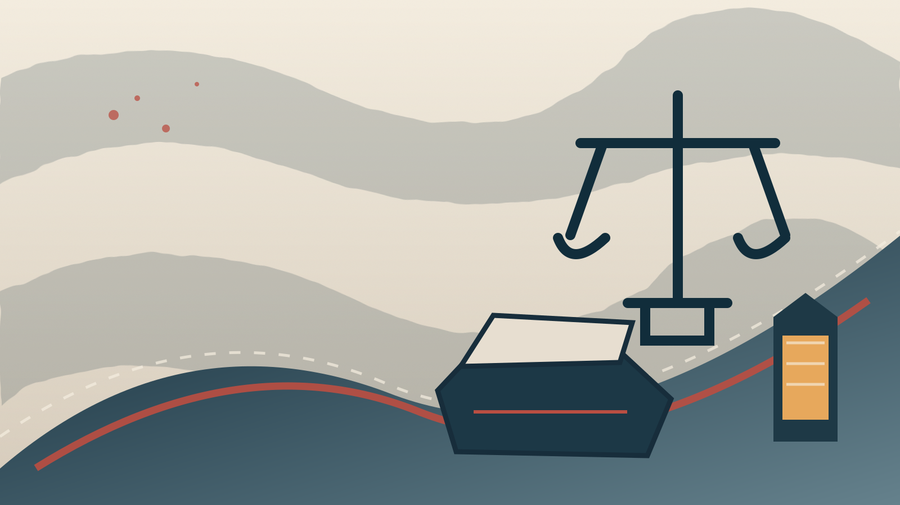
毒駕殺警案二審｜開庭重點
影像勘驗、車窗爭議與故意／過失的法律判斷。
現場整理，非正式法庭筆錄；事實與責任以法院最終認定為準。
閱讀旁聽筆記 → 旁聽記錄｜2026.10.22
旁聽記錄｜2026.10.22影像勘驗、車窗爭議與故意／過失的法律判斷；非正式法庭筆錄。
閱讀完整旁聽記錄 → 今日護童快報｜2026.10.23
今日護童快報｜2026.10.23社家署預告草案；適用範圍、給付與施行日期仍待正式公告。
閱讀完整制度追蹤 → 今日護童快報｜2026.10.23
今日護童快報｜2026.10.23疑似不當對待仍在調查；重點是及時醫療、風險隔離與可檢驗的後續。
閱讀查證更新 → 程序觀察｜2026.10.22
程序觀察｜2026.10.22尊重詰問與辯護權，也不讓傷勢來源、死亡原因與專業責任失焦。
閱讀完整觀察 → 今日護童快報｜2026.10.22
今日護童快報｜2026.10.22草案仍在蒐集意見；先看個資、推薦風險與申訴機制。
閱讀完整快報 → 制度追蹤｜2026.10.22
制度追蹤｜2026.10.22衛福部已預告配套草案；60 日預告期內，重點是查核如何做到及時、正確與可救濟。
閱讀完整制度解析 → 今日護童快報｜2026.10.21
今日護童快報｜2026.10.21安置後的就學、醫療、關係與照顧支持，仍須持續被制度接住。
閱讀完整快報 → 制度追蹤｜2026.10.20
制度追蹤｜2026.10.20組織法已公布；業務銜接、資源與施行日期仍須持續公開追蹤。
閱讀完整制度追蹤 → 護童快報｜2026.10.19
護童快報｜2026.10.19監控爭議背後，重點是保存、調閱與後續查核能否真正發揮作用。
閱讀完整快報 →CHILD PROTECTION ACTION ALLIANCE
持續追蹤案件、記錄司法程序，讓每一次看見，都成為守護。
觀看完整倡議影片 · 3 分鐘746 名兒少之後，制度仍要接住就學、醫療、關係與照顧支持。
新北市政府 · 已核實 →CHILD PROTECTION ACTION ALLIANCE
讓每一次看見、每一次記錄與每一次願意靠近，都成為孩子不被遺忘的光。
10 月｜行動焦點
從10月17日集會到公開行動與到庭關注，持續為孩子發聲。
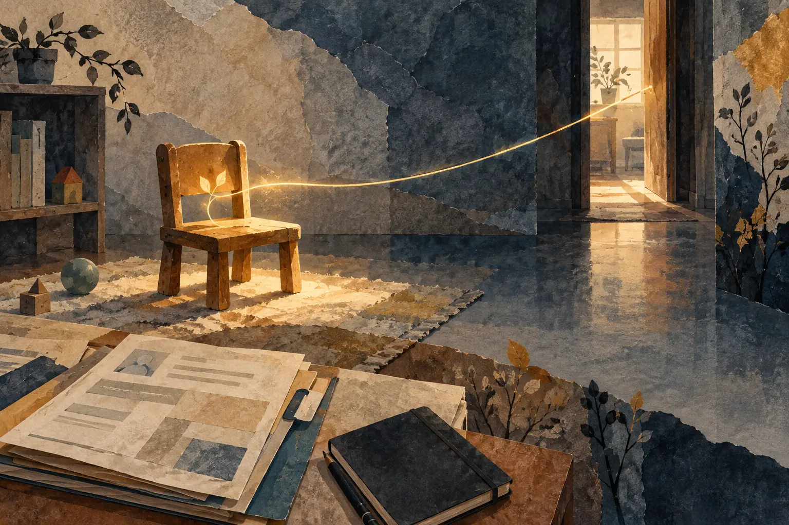
完整影片與繁簡字幕版本，保留每一份守護的聲音。
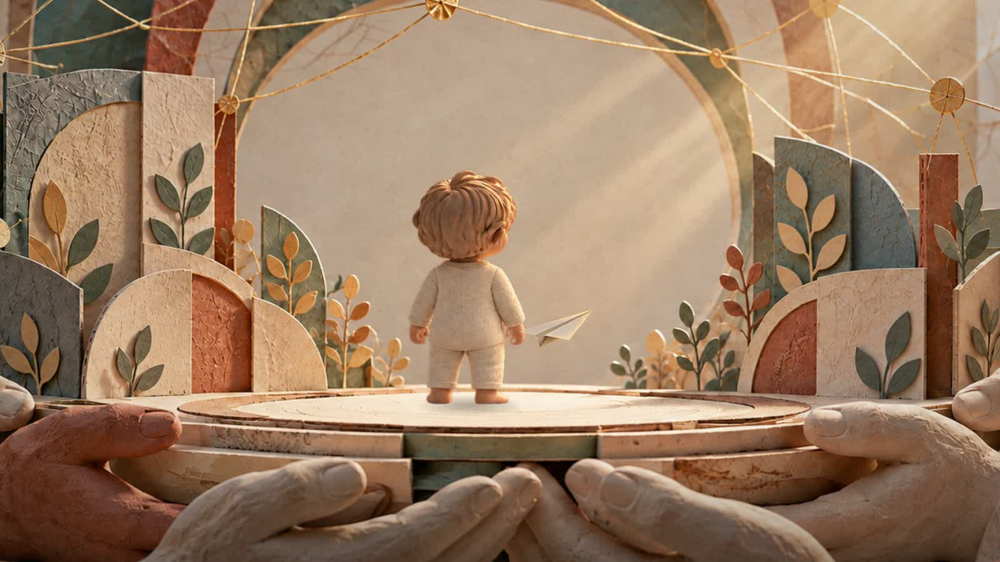
讓每一次看見，都成為守護。｜藝術意象
KAIKAI CASE · TEN HEARINGS
逐日閱讀十次審判期日的旁聽整理，查閱程序、證詞與辯論；各篇保留來源與資料界限。
2025.04.22 — 2025.05.07
案件、紀錄、制度與行動，從這裡找到完整內容。
最新報導與近期重要入口

影像勘驗、車窗爭議與故意／過失的法律判斷。
現場整理，非正式法庭筆錄；事實與責任以法院最終認定為準。
閱讀旁聽筆記 →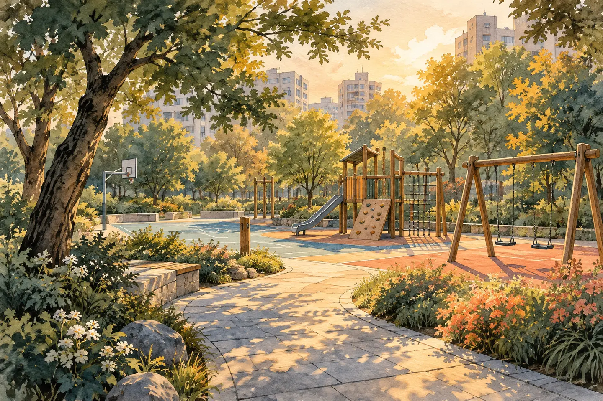
十分鐘遊戲圈、涼感公園與青少年戶外空間：近 200 名參選人響應後，承諾如何變成可檢驗的建設？
依中央社及倡議團體公開資料；建設成果仍待驗證
閱讀專題 →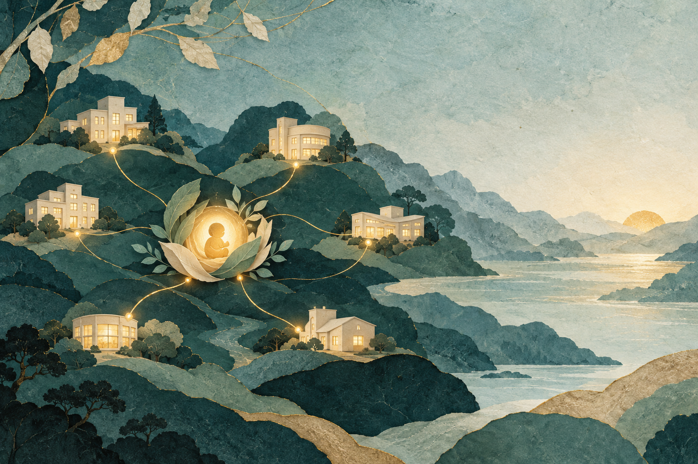
從名冊比對、主動訪視到綠色通道；服務量不是預防成功數。
高雄市衛生局公布資料；成效仍待持續追蹤
閱讀制度分析 →
新法已公布、施行日未定；同居人有法定不適任情形時，保母不得在自宅收托。
法務部全國法規資料庫：《兒童托育服務法》第 55 條
閱讀制度說明 →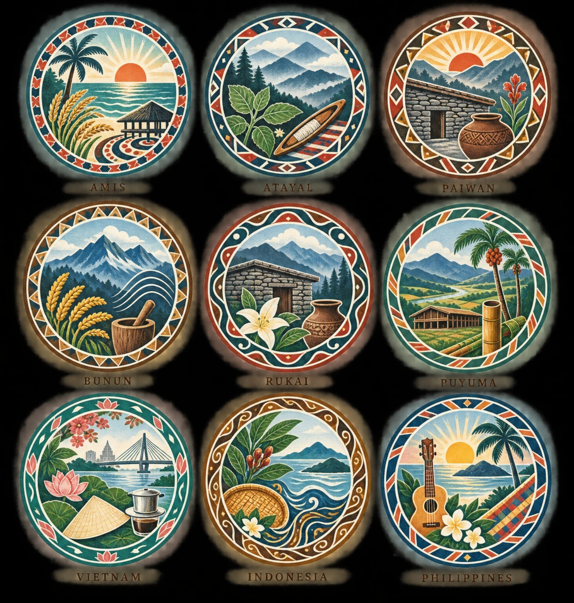
案件仍在偵辦；整理已公開進度，並追問三名孩子的醫療、安全與安置如何被持續接住。
中央社、公視新聞網公開報導整理・案件仍待司法釐清
閱讀詳細資訊 →法院已正式公告庭期與入庭規則。
10/22 時間與法庭為本站依提供資訊整理，尚待官方核對；實際庭期、地點及旁聽規則以法院公告為準。
先掌握案件，再深入司法紀錄與制度責任
依發布日期由新到舊，內文附原始來源。

學生與教托育工作者的公費抗病毒藥劑擴大條件延至 11 月 15 日；是否用藥仍由醫師判斷。
臺灣疾病管制署，2026-10-20
閱讀完整說明 →
公開承諾不能替代可核對的修復：通報、24 小時分級、保全與調查都須留下結果。
中央社、法務部全國法規資料庫，2026-10-17–18
閱讀完整報導 →
北市說明受補助園所影像至少保存90日；下一步要檢驗保全、調閱與調查能否真正接住孩子。
臺北市教育局、公共電視，2026-10-17
閱讀完整說明 →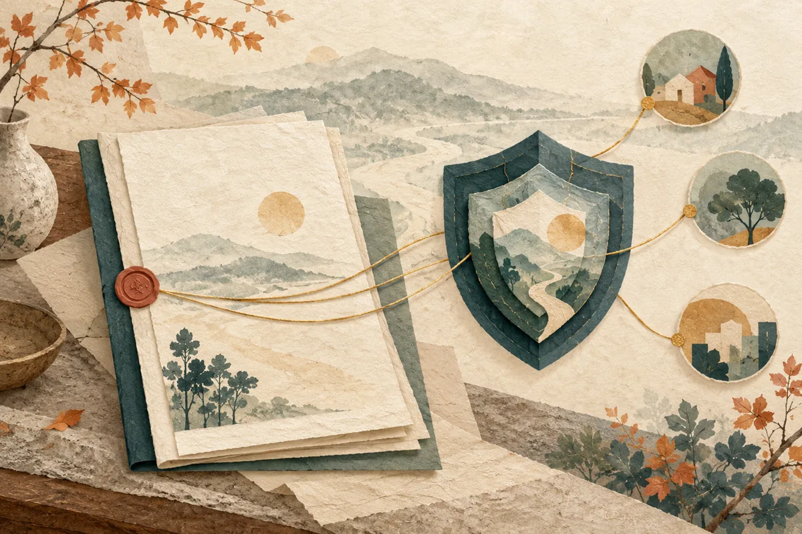
SDM 教材持續可取得；真正的關鍵，是評估後是否接上及時通報與保護行動。
衛生福利部保護服務司，頁面更新 2026-10-16
閱讀完整說明 →台北區醫院兒少保護醫療網絡聚焦傷勢警訊、病史比對與必要通報；會後政策成果尚待正式公布。
台灣兒童急診醫學會，2026-10-16
閱讀完整說明 →
官方專業懲戒已公開；跨縣市轉介、紀錄稽核與督導支持，仍須一起補強。
衛福部社工師懲戒資料、中央社，2026-10-13／15
閱讀完整說明 →就診人次下降不代表可以鬆懈；5 歲以下幼兒是重症高風險群。
衛生福利部疾病管制署，2026-10-13
閱讀完整說明 →一名孩子已安置，另一名仍在治療；追問出院交接與後續安全評估。
中央社、公視新聞網公開報導整理・案件仍在偵辦
閱讀詳細資訊 →案件仍在偵辦；整理已公開進度，並追問三名孩子的醫療、安全與安置如何被持續接住。
中央社、公視新聞網公開報導整理・案件仍待司法釐清
閱讀詳細資訊 →從中途學校輔導量能、連假求助到網路侵害與跨部門問責，逐項追問安置之後的實際支持。
每日護童快報・公開來源與制度分析
閱讀詳細資訊 →不以偵查資訊預斷責任；從聲押程序追問安全、交接與可稽核的保護流程。
每日護童快報・檢察機關公開資料與制度分析
閱讀詳細資訊 →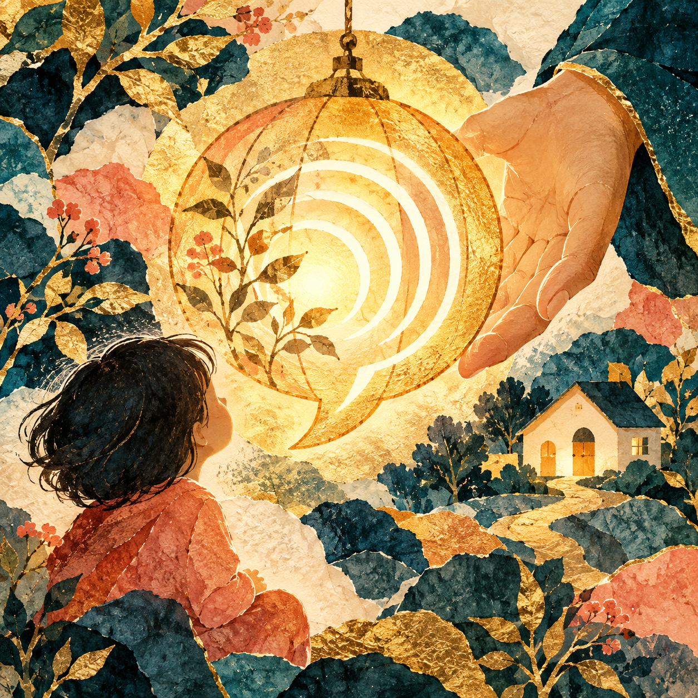
不硬湊新案；從英國強制通報新制，追問揭露後的安全評估、交接與責任留痕。
每日護童快報・官方一手資料與制度分析
閱讀詳細資訊 →不硬湊新案；從安全計畫、風險復評與安置門檻，追問誰負責證明孩子真正安全。
每日護童快報・官方一手資料與制度分析
閱讀詳細資訊 →從麻州官方調查，追問通報、查核、風險復評與機構責任如何在孩子還能被救援時啟動。
每日護童快報・官方一手資料與制度分析
閱讀詳細資訊 →以司法紀錄與制度責任，追問每一道保護環節。
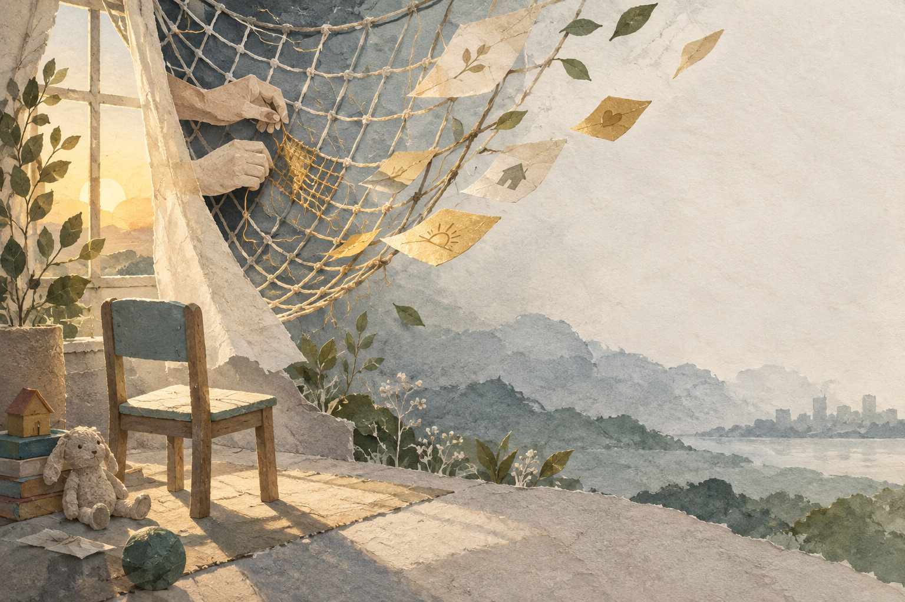
從照護系統失靈到兒少保護，整理案件背景、關鍵時間軸與制度責任。
閱讀詳細資訊 →七起案件看見風險如何在制度縫隙間累積；進入系統，不等於真正被接住。
閱讀詳細資訊 →台灣近十年暗網與匿名網絡犯罪：12案判決、時間軸、受害者保護與制度改革。
閱讀詳細資訊 →CASE PATTERNS · PROTECTION CHAIN
今日新聞不是孤立事件。以已公開的案件、程序資料與制度規則，對照影像保存、訪視查核與通報承接如何共同決定孩子能否被及時保護。
案件背景、制度問題與公開司法紀錄，依專頁所載資料閱讀。
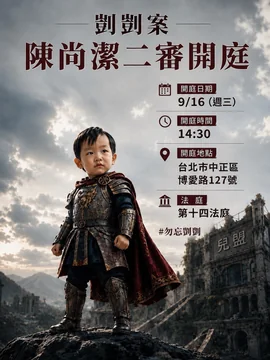
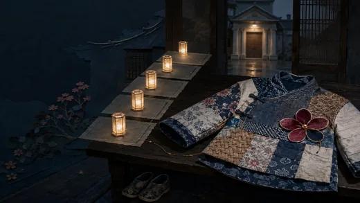
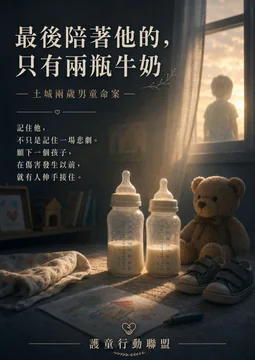
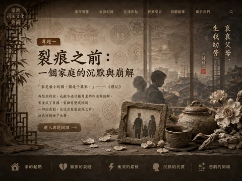
土城家暴雙屍案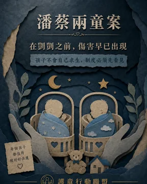
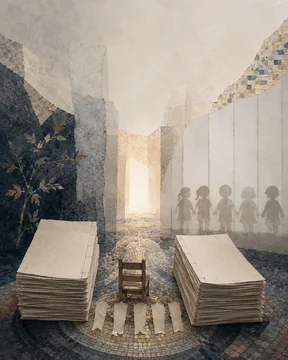
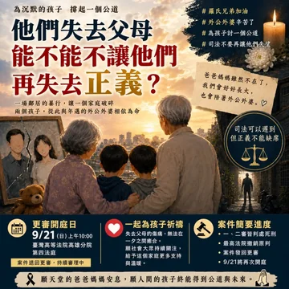
羅小弟兄弟案台灣、大陸、香港、日本與韓國，沿著案件看見保護的缺口。
以圖像閱讀案件與司法程序；資料界限與來源請見各篇說明。
把名字留下，把守護孩子的責任繼續帶往明天。
走進紀念專區，留下記憶，也持續追問保護如何更早抵達。
進入專區 →近期活動與公開倡議，詳細資訊請閱讀活動頁。
公開程序的可查閱紀錄
護童行動聯盟持續參與法院旁聽、案件追蹤、公共倡議與被害者支持。歡迎加入社群，也為孩子留下一句守護的話。
 02案件時間軸
02案件時間軸
官方社群｜讓守護持續被看見
追蹤最新倡議、活動與公開紀錄。
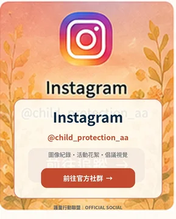
Instagram
進入專區 →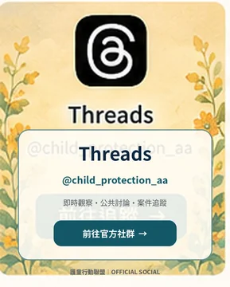
Threads
進入專區 →Facebook
進入專區 →